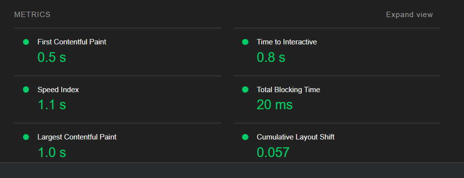

Resultater fra verktøyene Webaim og Lighthouse. Og endringer som er implementert, for å øke totalt resultat og fjerne errors. Starter med Lighthouse score:
Analyse
Lighthouse score:
Resultater fra "lighthouse" testen av websiden,
ga gode/høye score. På rundt 90%, jeg ser og forstår at det er bildene som er et sårt punkt
og de gjør mindre "reaktiv" og kan dempe opplastningshastigheten. Utenom dette, ønsker jeg "SEO" litt høyere, slik at siden blir "funnet" kjappere via Google.
Derfor tar jeg inn tipset om Meta description tag, denne gir en hel beskrivelse på din side.
Her er det viktig med en ordentlig beskrivelse, som forklarer godt hva din side faktisk inneholder.
Endringer gjort basert på Lighthouse: For å øke SEO score og performance:
Legge inn Meta description tag, med tilsvarende utfyllende tekst. På alle sider på nettsiden, eksempelvis: meta name="description" og definere content.
Justere bildene størrelsene på alt av bilder, dermed endret jeg img-taggen til max-width: 100% istedenfor width: 100%. Uten å forringe kvaliteten på bildene
Legge inn enda mer Microdata beskrivelser på alle sidene - artiklene og bilder, eksempelvis itemprop="name" og img itemprop="image" id="logo" for alle artikkel titlene/overskrifter
Screenshot med ny og bedre score, desktop versjon. Økning i SEO score.
Analyse
Lighthouse hovedpunkt:
Her er et screenshot, som viser til at bildestørrelsene gjør at siden opplastes
tregere, altså det tar ca 16 sekunder å laste opp bildene på siden. Skal teste om jeg kan manuelt justere å sette en fast pixelstørrelse, i CSS.

Resultat av lighthouse test på desktop:
Her er et screenshot, som viser til at bildestørrelsene gjør at siden opplastes
tregere, altså det tar ca 16 sekunder å laste opp bildene på siden. Skal teste om noe kan endres med vidde og høyde.
Analyse
Lighthouse mobilversjon:
Her er et screenshot, som viser til at bildestørrelsene gjør at siden opplastes
tregere, altså det tar ca 16 sekunder å laste opp bildene på siden. Dette gjør noe med den totale Performance til nettsiden.
Endrer dette ved å sette max width og height til 100%, på alle bildene på nettsiden. Ny score er nå 77%.
Screenshot hentet fra Lighthouse: score av mobilversjon.
Screenshot hentet fra Lighthouse: resultat av endringer for å endre bildestørrelser.
Analyse
Webaim: resultater
Totalt sett 3 erros, dette er grunnet de sosiale medier knappene i footer, ikke hadde Aria-labels. De 7 andre alerts er
linker som lenker til det samme stedene, eksempelvis at et artikkelkort har en overskrift som du kan trykke på for å komme til innholdssiden.
Andre ting var at det var understreking inne i paragrafer, dette var egentlig for å illustrere noen poeng. Men jeg ser nå at dette var unødvendig og bare
forvirrende for lesere. De siste punktene var "skipped head-level", og alle sider på en nettside skal ha strukturell riktig head-levels. h1, h2, h3.
Endringer basert på Webaim resultat:
Strukturelle endringer: riktig header levels. Slik at man ikke hopper over header-levels, alle innholdssider med unntak av kontakt oss fikk en h2 head og et lite paragraf. Andre endringer, var å gjøre om tabellene fra unik Id til en klasse. Slik at de kan gjenbrukes lettere.
Hadde totalt 3 errors i Webaim.org, disse var de nyplasserte sosiale medier knappene i footer. Dette løste jeg ved å søke Google etter empty Links. Løste dette ved å legge til aria-labels.
Utenom dette, var jeg spent på kontraster og fargebruk. Den var på linje med A-standarder. Gjør navigasjonsbarsfargen til svart, for å gjøre den enda tydligere.
Fjerner all unødig understreking i paragrafene mine, dette kan være forvirrende for lesere. Da de ikke er klikkbare, men kun for illustrasjon. Beholder kun taggen emphasis, for å illustrere noen poeng.
Resterende rundt 7 alerts for hele nettsiden, gjør at jeg da gjør om alle artikkelkort kategoriene til kun en enkel tekst. Redunent links, vil si at det er flere linker som lenker til det samme stedet. Beholder kun disse for hjem i navigasjonsbaren, men gjør endring på innholdssidene.
Analyse
Webaim resultat: etter endring
Resultater fra "lighthouse" testen av websiden,
ga høy score. På rundt 90%, jeg ser og forstår at det er bildene som er et sårt punkt
og de gjør mindre "reaktiv" og kan dempe opplastningshastigheten. Utenom dette, ønsker jeg "SEO" litt høyere, slik at siden blir "funnet" kjappere via Google.
Derfor tar jeg inn tipset om Meta description tag, denne gir en hel beskrivelse på din side.
Her er det viktig med en ordentlig beskrivelse, som forklarer godt hva din side faktisk inneholder.
Analyse
Resultat etter endringer: Webaim og Lighthouse.
Resultat etter endringer fra Webaim: slik som fjerning av unødig understreking i paragrafer, riktig strukturell head-level ved å legge inn
h1 og følge en god head-level videre på nettsiden. Og til slutt omgjort en del lenker til vanlig overskifter i h2-tags, sitter jeg igjen med 2 alerts.
Dette er på grunn av at navigasjonsbaren "hjem", og bedriftslogo som begge lenker til startsiden. For denne gang ser jeg bort fra dette. Ellers har nettsiden godkjent A-krav for kontraster, men jeg velger å endre navigasjonsbarsfargen til helt svart. For å gjøre den enda tydeligere.
Når det gjelder Lighthouse score, har den ligget på rundt 90%. Men jeg har fått økt den til nærmere 100%, når det gjelder SEO ved å legge inn mer microdata for hele nettsiden og har lagt inn
description med en forklarende alt tekst. Som forklararer godt hva alle sidenes innhold er, slik at Google og leser kan forstå hva sidene inneholder. Utenom dette,
har bildene vært et sårt punkt, da de gjør siden treg. Dette har jeg fikset ved å sette en max hight og width på 100%. Nå er denne Lighthouse scoren 77%.
Noen tips for å øke brukervennelighet:
Underveis i denne eksamen, har jeg benyttet mer av Google for søk etter svar, mer bruk av validatoren underveis for å dobbeltsjekke at alt fungerer.
Og blitt mer bevisst på hvordan alt på en nettside fungerer og opererer sammen. God universell utforming har en effekt på
hvordan siden din fremstår og påvirker SEO. Fordi du må gjøre tiltak for å forbedre din nettside, slik som å legge til Aria, Microdata og
se over struktur og oppbygging av nettsiden. Resultatene på Webaim og Lighthouse, er nå høynet og jeg er fornøyd med resultatet etter endringene.
WCAG Standard - resultat:
A
AA
AAA
All ikke tekstlig innhold, skal ha alternativ tekst
Bruk av farger, skal ha mening i bruk av formidling av informasjon
Alle sider har titler
Semantiske tagger, har en start og slutt tagg
Headings og etiketter forklarer meningen
Bilder har tekst, som forklarer bildene
Kontrast minimum, tekst er i en passelig størrelse
Navigasjonen er konsistent, lik på alle sider
Seksjons heading, for å strukturere innholdet
Linkene gir mening, for hvor brukeren havner
Tastatur mulighet, mulighet å bruke tab-tasten for navigasjon
Hadde 3 errors, tomme linker. Og rundt 7 alerts "rendundant links", manglende h1-overskrifter og missvisende "underline" i paragrafer.
Aria-label på sosiale medier linkene, fjernet overflødig lenker som linker til samme sted. La til h1-tag på alle innholdssider. Tok bort underline i tekst, da det er missvisende.
Ingen røde errors, kun 1-2 alerts med det gjelder "hjem" i navigasjonsbaren. Fordi logo og hjem, fører til samme sted.
Blitt mer kjent med bruken av Aria, både label og sette true=hidden. Og føre god HTML-struktur, endret på navigasjonsbarsfargen til helt svart. Slik at den er endre tydeligere.
Lighthouse:
Desktop: 90%, Mobil: 53%
Sette max-width og height på bildene
Desktop: rundt 100%, Mobil: 77%
Mer bevisst på bildestørrelse og hvordan det påvirker performance
SEO score:
Score på rundt 90%
Mer microdata og description
Nærmere 100%
Gøy å se at de endringene man gjør, har en effekt på scoren